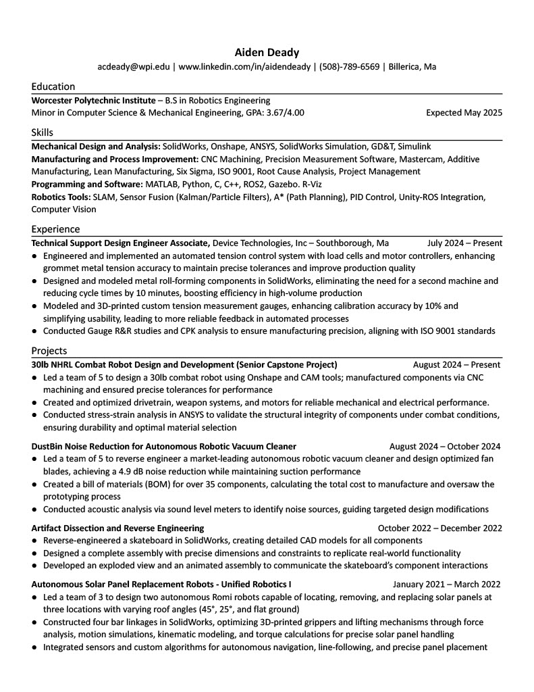
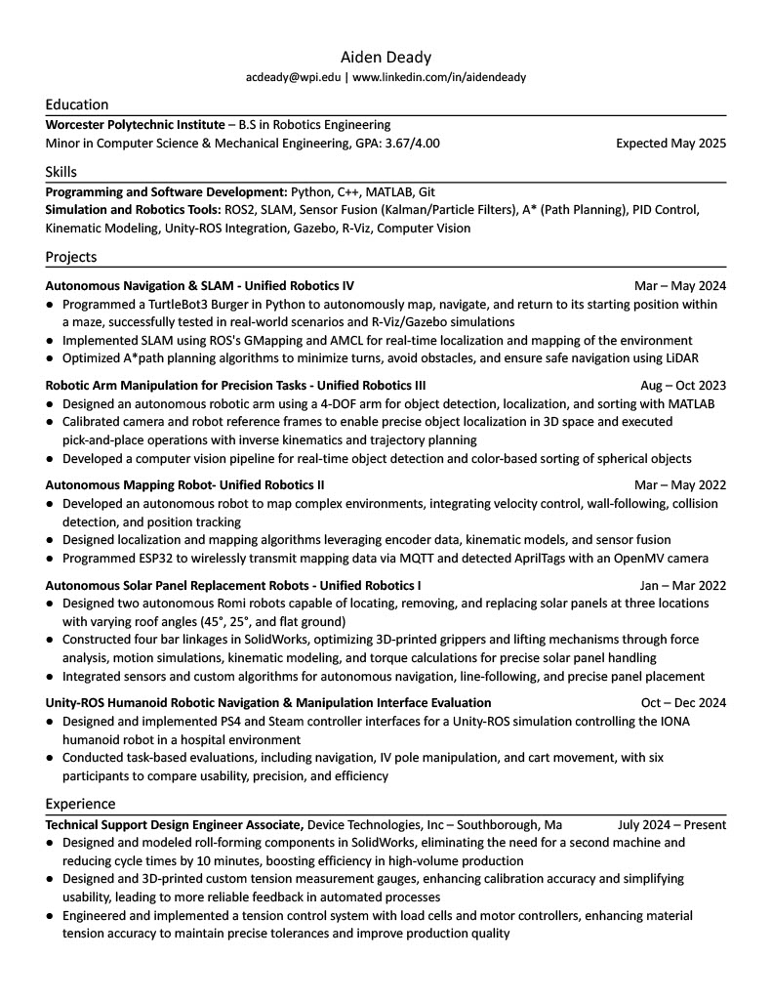

About Me
I am a Robotics Engineering student at WPI, graduating in May 2025, with minors in Mechanical Engineering and Computer Science. I design high-performance robotic systems, precision mechanical components, and intelligent automation solutions. From BattleBots to autonomous systems, I blend Robotics, Mechanical Engineering, and Computer Science to push innovation. At Device Technologies, I designed automated tension control systems, optimized metal roll-forming machines, and worked on QC software, improving production accuracy and efficiency. Whether refining designs, automating processes, or solving complex engineering challenges, I build solutions that perform. Take a look at the Projects section for more details on what I have been working on during my time at WPI!
Mechanical Engineering Resume
Robotics Engineering Resume
Skills
Mechanical Design
SolidWorks, Onshape, ANSYS, SolidWorks Simulation, GD&T, Simulink
Manufacturing & Process Improvement
CNC Machining, Precision Measurement Software, Mastercam, Additive Manufacturing, Lean Manufacturing, Six Sigma, ISO 9001, Root Cause Analysis, Project Management
Programming and Software
MATLAB, Python, C, C++, ROS2, Gazebo, R-Viz, HTML
Robotics
SLAM, Sensor Fusion (Kalman/Particle Filters), A* (Path Planning), PID Control, Unity-ROS Integration, Computer Vision